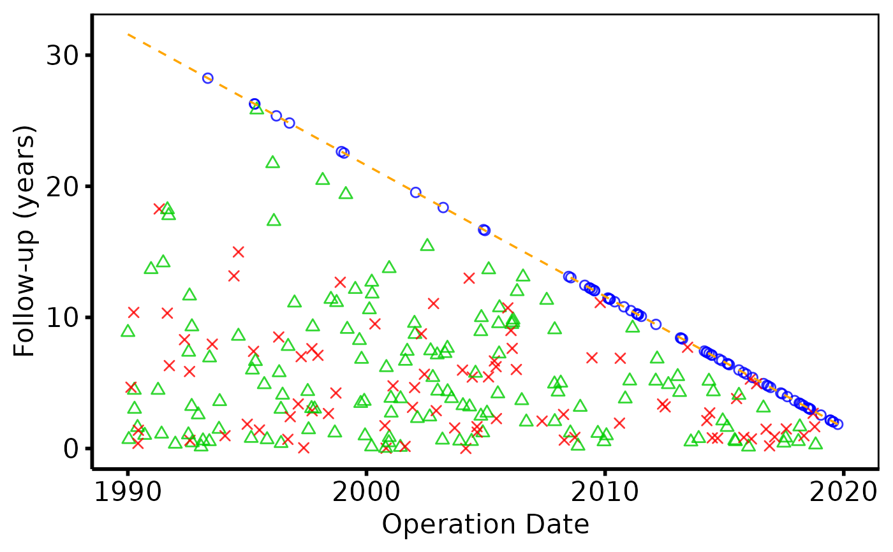

Validates dates, builds per-patient follow-up frames, and returns an
hv_followup object containing the data for both the death panel
(type = "followup") and, optionally, the event panel
(type = "event"). Call plot.hv_followup on the
result to obtain a bare ggplot2 object.
Usage
hv_followup(
data,
iv_opyrs_col = "iv_opyrs",
death_col = "dead",
death_time_col = "iv_dead",
event_col = NULL,
event_time_col = NULL,
death_for_event_col = NULL,
origin_year = 1990,
study_start = as.Date("1990-01-01"),
study_end = as.Date("2019-12-31"),
close_date = as.Date("2021-08-06"),
tolower_names = TRUE,
death_levels = c("Alive", "Dead"),
event_levels = c("No event", "Non-fatal event", "Death"),
segment_drop = 0.2
)Arguments
- data
A data frame with one row per patient. See
sample_goodness_followup_data.- iv_opyrs_col
Name of the operation-year column. Default
"iv_opyrs".- death_col
Name of the binary death-indicator column. Default
"dead".- death_time_col
Name of the time-to-death column. Default
"iv_dead".- event_col
Name of the non-fatal event indicator column. Required to compute the event panel (
type = "event"). DefaultNULL(event panel unavailable).- event_time_col
Name of the time-to-event column. Required when
event_colis supplied. DefaultNULL.- death_for_event_col
Name of the death column to use specifically in the event panel (defaults to
death_colwhenNULL).- origin_year
Integer; calendar year used as the y-axis origin. Default
1990.- study_start
Start of study period. Default
as.Date("1990-01-01").- study_end
End of study enrolment. Default
as.Date("2019-12-31").- close_date
Data close date. Must be \(\geq\)
study_end. Defaultas.Date("2021-08-06").- tolower_names
Logical; whether to lower-case column names when materialising the data. Default
TRUE.- death_levels
Length-2 character vector labelling the two death states (alive first). Default
c("Alive", "Dead").- event_levels
Length-3 character vector for the event panel (event-free, non-fatal event, death). Default
c("No event", "Non-fatal event", "Death").- segment_drop
Numeric; vertical offset (years) for the segment endpoint below the follow-up point. Default
0.2.
Value
An object of class c("hv_followup", "hv_data"):
$dataPer-patient data frame for the death panel.
$metaColumn names, date parameters, state levels,
has_eventflag.$tablesNamed list with
diagonal(the study-period reference diagonal) and, when event columns are supplied,event_data.
Examples
dta <- sample_goodness_followup_data()
# 1. Build data object
gf <- hv_followup(dta)
gf # prints follow-up summary
#> <hv_followup>
#> N patients : 300
#> Study period: 1990-01-01 – 2019-12-31 (close: 2021-08-06)
#> Death col : dead / iv_dead
#> Panels : followup
# 2. Bare plot -- undecorated ggplot returned by plot.hv_followup
p <- plot(gf)
# 3. Decorate: colour palette, axis labels, theme
p +
ggplot2::scale_color_manual(
values = c("Alive" = "steelblue", "Dead" = "firebrick"),
name = NULL
) +
ggplot2::labs(x = "Operation Date", y = "Follow-up (years)") +
hv_theme("poster")
 # With event panel -- same 3-step pattern
gf2 <- hv_followup(dta, event_col = "ev_event", event_time_col = "iv_event")
plot(gf2, type = "event") +
ggplot2::scale_color_manual(
values = c("No event" = "blue", "Non-fatal event" = "green3",
"Death" = "red"),
name = NULL
) +
ggplot2::scale_shape_manual(values = c(1, 2, 4), name = NULL) +
ggplot2::labs(x = "Operation Date", y = "Follow-up (years)") +
hv_theme("poster")
# With event panel -- same 3-step pattern
gf2 <- hv_followup(dta, event_col = "ev_event", event_time_col = "iv_event")
plot(gf2, type = "event") +
ggplot2::scale_color_manual(
values = c("No event" = "blue", "Non-fatal event" = "green3",
"Death" = "red"),
name = NULL
) +
ggplot2::scale_shape_manual(values = c(1, 2, 4), name = NULL) +
ggplot2::labs(x = "Operation Date", y = "Follow-up (years)") +
hv_theme("poster")
